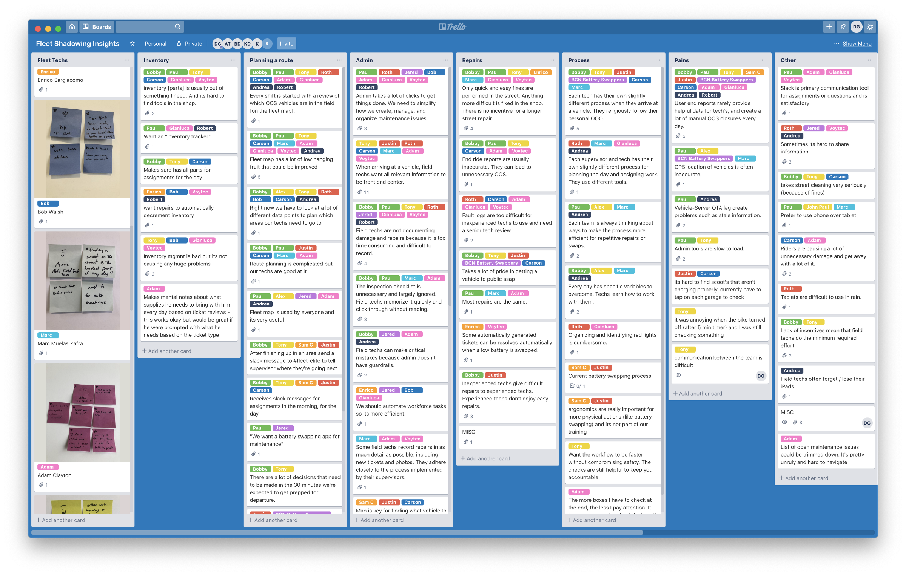
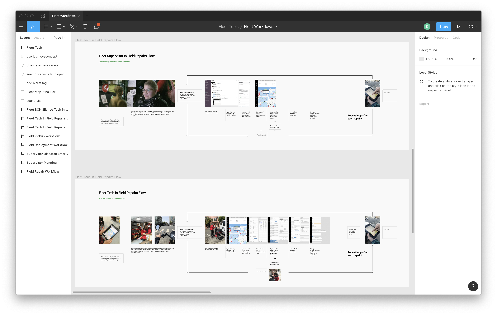
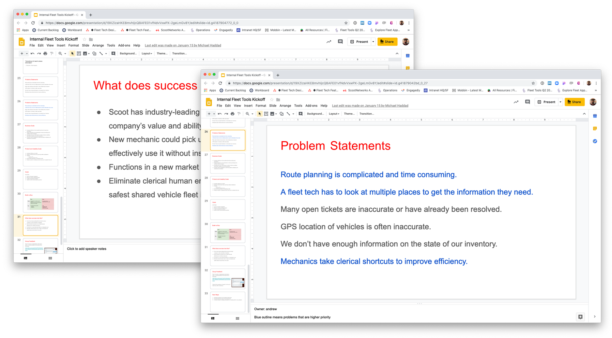
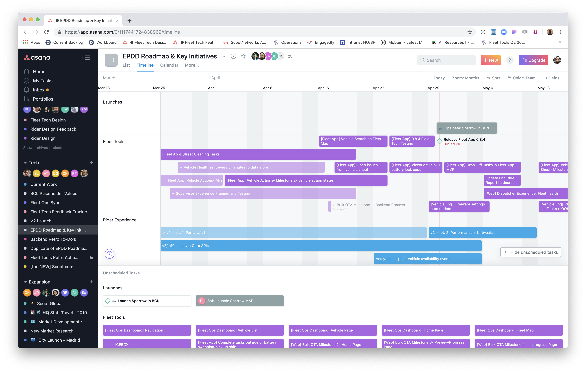
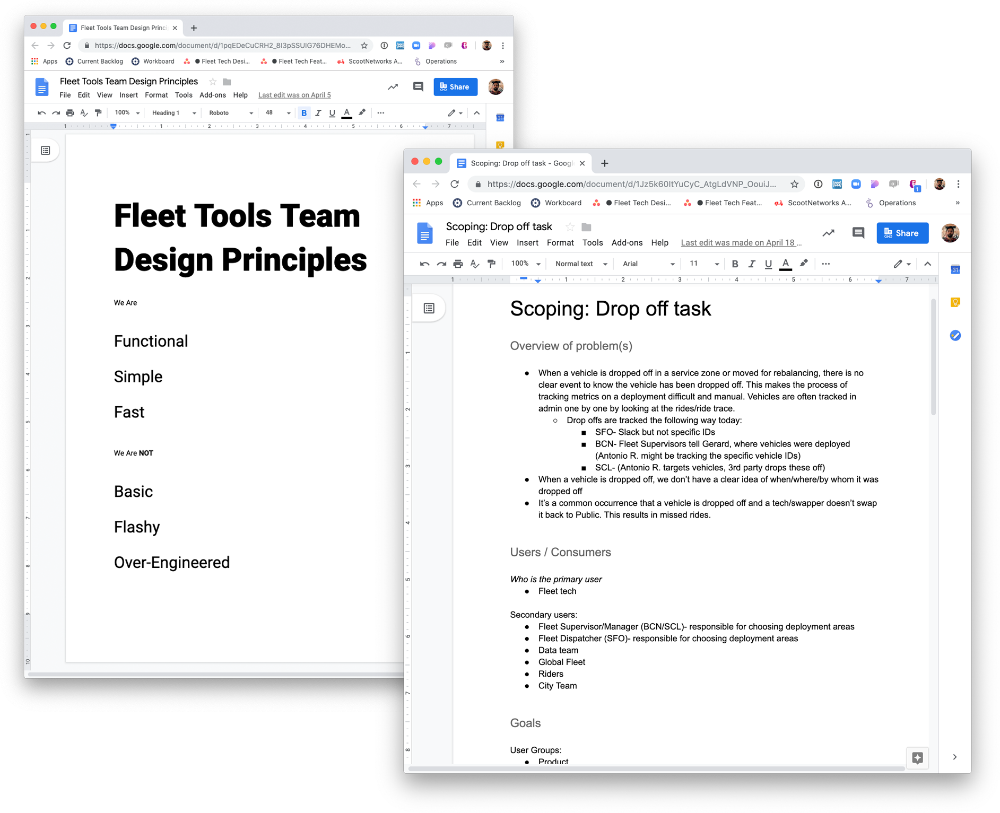
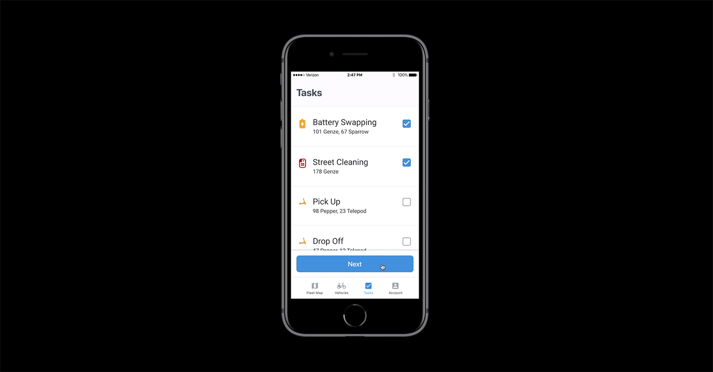

Building a Team at Scoot
When I joined Scoot in the summer of 2018, the company was finally ready for a dedicated team to work on internal tools. Since then I've helped hired a product manager, another designer, and grew the engineering team from 1 to 6. We're continually improving our desktop and mobile tools for managing our fleet of shared electric motor scooters, eBikes, and electric kick scooters. Here's how we got started.
First Step: Define Priorities
We audited the system and did some qualitative research to understand the problem space. My first team member was an engineering manager with a ton of context in Scoot's systems. Together we conducted 45 minute sessions with 19 different users, across customer service, city fleet and city managers, and field service supervisors. As well as shadowed fleet technicians and customer service reps while they performed their daily tasks.
There were some strong pain points and patterns.
We learned that although some of the tools were difficult to use, there were no major pain points for customer service reps. They were able to look for riders, help them with payment issues, and occasionally turn on a scooter for them.
We mapped out all the major workflows.
Through hours and hours of shadowing we learned that a lot of field technicians were struggling to use a poorly formatted desktop tool on their mobile devices to determine what work needed to be accomplished, and find the vehicles in the field to fix them.
Step 2: Define priorities and share with key stakeholders.
We held a team kickoff and invited all our key internal users and stakeholders. We explained what we had learned, what the state of our current tools are, and our short term and long term roadmap. Through prioritizing our roadmap with our stakeholders everyone had visibility into the timeline and value of our work.
Working closely with my PM and engineering lead, we built out a roadmap and planned major releases.
Step 3: Develop Implementation Process
We further matured our process by developing design principles, project scoping templates, and organized recurring team events like design reviews, standups, and retro's. We also took turns doing weekly shadowing of our field technicians to build empathy throughout the team.

In a few months we built a react-native app that automated route planning for low charge vehicles, and made it easier to locate vehicles that needed maintenance.
After that, we started planning out our roadmap to support city expansion, create new automated tasks like picking up and dropping off vehicles, and simplifying the process of performing actions on a vehicle.
